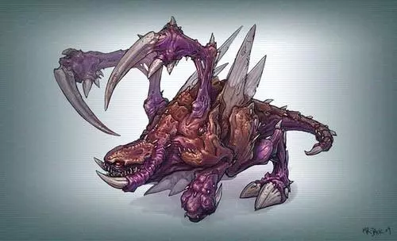

Star Craft II - Zerg
The ruthless ferocious zerg, waiting to swallow the world.
The sly Queen of Blades leads the alien zerg, intending to kill in the galaxy and eliminate any resistance. Zerg does not use technology to build weapons, armor or interstellar warships, but uses biological resilience and planned mutations to effectively achieve their goals.
Exclusive features:
Units that can escape
Fast-moving swarms of insects such as alienated insects and flying mandarins
Insect moss is an organic biochemical substance that spreads near Zerg buildings
IMPORTANT UNIT
ALIENATOR
Fast-moving melee attackers hatch in pairs. Wait for an opportunity to raid a small group of enemy units.

FLYING MAN
A diversified air unit that can attack ground and air units. They are better at conflict warfare and harassment than confrontation.

THUNDER MONSTER
A huge ground unit with teeth that can cause area damage. Strong but slow to move.